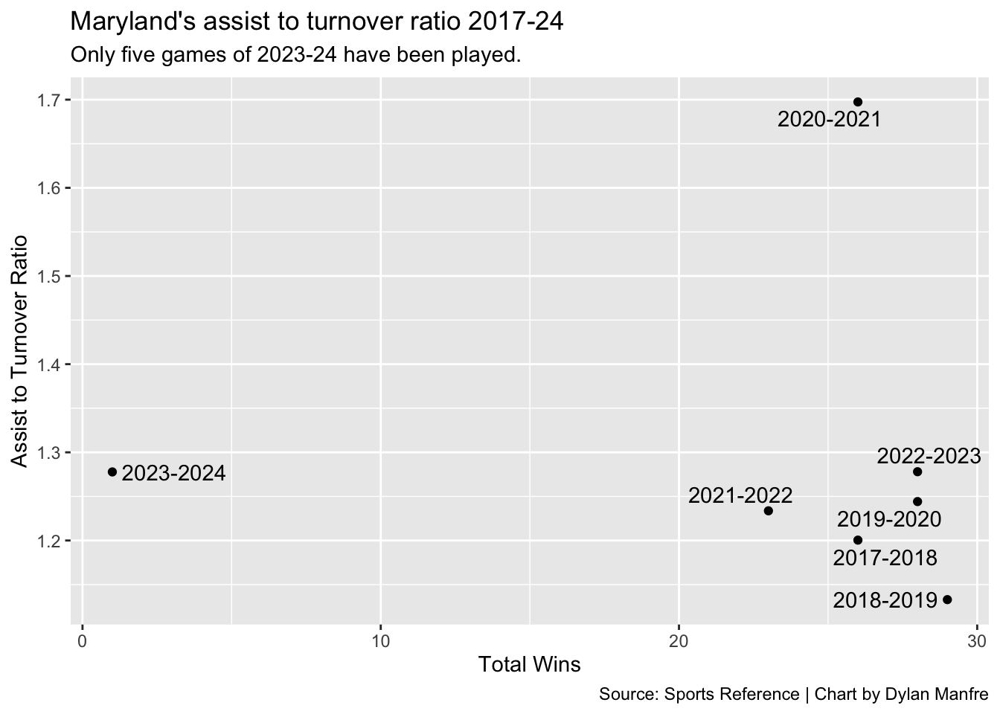

Code
library(tidyverse)
library(ggrepel)
library(janitor)
library(ggplot2)Early notes: Data comes from Sports Reference - the data accounts for around 98% of games frpm 18-24 seasons.
library(tidyverse)
library(ggrepel)
library(janitor)
library(ggplot2)logs18_24 <- read.csv("https://thescoop.org/sports-data-files/wbblogs1824.csv")
#62,584 records ovver 2018-presentestablishing lists
power_5 <- c("ACC", "Big 12", "Big Ten", "Pac-12", "SEC")——– data cleaning ————-
#Getting rid of records where an ator cannot be generated
logs18_24 <- logs18_24 %>%
filter(!is.na(TeamAssists) & !is.na(TeamTurnovers) & !is.na(OpponentAssists) & !is.na(OpponentTurnovers))dupes <- logs18_24 %>%
get_dupes(Date, TeamFull)
view(dupes)
# changing the dates in the eight dupes
logs18_24$Date <- ifelse(logs18_24$Date == "2019-11-24" & logs18_24$TeamFull == "Oregon Ducks" & logs18_24$Opponent == "Oklahoma State", "2019-11-28",
ifelse(logs18_24$Date == "2018-11-24" & logs18_24$TeamFull == "American Eagles" & logs18_24$Opponent == "Hawaii", "2019-11-23",
ifelse(logs18_24$Date == "2018-11-24" & logs18_24$TeamFull == "Hawaii Rainbow Warriors" & logs18_24$Opponent == "American", "2018-11-23",
ifelse(logs18_24$Date == "2023-01-25" & logs18_24$TeamFull == "Chicago State Cougars" & logs18_24$Opponent == "St. Francis (IL)", "2023-01-24", logs18_24$Date))))
#checking the new dupes
logs18_24 %>%
get_dupes(Date, TeamFull)
view(dupes)mutating certain columns that I may need for the analysis. team_ator, opp_ator and point differnece.
logs18_24 <- logs18_24 %>%
mutate(
winloss = case_when(
grepl("W", W_L) ~ 1,
grepl("L", W_L) ~ 0),
team_ator = (TeamAssists) / (TeamTurnovers),
opp_ator = (OpponentAssists) / (OpponentTurnovers),
pts_diff = TeamScore - OpponentScore)
logs18_24$Conference <- sub(" WBB", "", logs18_24$Conference)establishing ator only. These columns will be necessary for my analysis. From here on, the main df will be ator_only.
ator_only <- logs18_24 %>%
select(Season, Date, TeamFull, Conference, Opponent, TeamScore, OpponentScore, winloss, pts_diff, TeamAssists, TeamTurnovers, OpponentAssists, OpponentTurnovers, team_ator, opp_ator)—– exploratory data section ——-
season_ator <- ator_only %>%
group_by(Season, TeamFull, Conference) %>%
summarize(season_team_ator = sum(TeamAssists)/sum(TeamTurnovers),
season_opp_ator = sum(OpponentAssists)/sum(OpponentTurnovers),
total_wins = sum(winloss)
)
# To filter for a specific team, inster this: filter(TeamFull == "team_name")#filtering for the ators I want
p5_teams <- season_ator %>%
filter(Conference %in% power_5, Season == "2022-2023")
b10 <- season_ator %>%
filter(Conference == "Big Ten", Season == "2022-2023")
umd <- ator_only %>%
filter(TeamFull == "Maryland Terrapins")STORY SENTENCE: Among the Big Ten teams, Maryland has a high ator and a good amount of wins. The Terps ended the year with an appearance in the elite eight and still played efficient basketball along the way. Near the Terps are Iowa, who was in the championship game last year, and one of the best teams in the nation, along with Indiana and Ohio State.
ggplot() +
geom_point(data = b10, aes(x = total_wins, y = season_team_ator))+
geom_text_repel(data = b10, aes(x = total_wins, y = season_team_ator, label = TeamFull))+
labs(x = "Total Wins",
y = "Assist to turnover ratio",
title = "2022-23 seaosn ator",
subtitle = "Shows all b10 ators from last season with labeled teams",
caption = "Source: Sports Reference | Chart by Dylan Manfre")
Conference ator over the years:
STORY SENTENCE: Over the last five years, Maryland consistently had a better ratio than the league end of season ator.
umd_years <- season_ator %>%
filter(TeamFull == "Maryland Terrapins")
b10_years <- ator_only %>%
filter(Conference == "Big Ten") %>%
group_by(Season, Conference) %>%
summarise(conf_ator = sum(TeamAssists)/sum(TeamTurnovers))
b10_umd_years <- inner_join(b10_years, umd_years, by="Season")
b10_umd_years <- b10_umd_years %>% select(-c(Conference.y, season_opp_ator)) %>% rename(Conference = Conference.x)STORY SENTENCE: `Maryland this year has structured its schedule to be very difficult playing multiple AP Ranked opponents in its first five games. But, the Terps have posted a ____ record and a ratio of _____ over the first stretch of the season.
# Umd 2022-23 ator
umd_22_23_ator <- umd %>%
filter(Season == "2022-2023") %>%
arrange(desc(TeamAssists))
#First five games of this season
umd_23_24_ator <- umd %>%
filter(Season == "2023-2024")Time element: I want to see how Maryland’s ator went up or down last season and put a horozontol line with the b10 average.
STORY SENTENCE: Maryland's ator started out good but really improved in December when it went to a 1.5 which shows it was an incredibly effective team. It's most assists was 21 against Minnesota. And having a 3.5 ratio agaisnt UConn is quite impressive given how good the Huskies have been historically.
Maryland had a good ratio in March, when games matter most. Tthe Terps were pushing a 1.52 ratio around tournament time and its opponents were pulling lower than 1.0 highlighting their inefficiencies.
# Maryland's 2022-23 ator by month
umd_monthly_22_23 <- umd %>%
filter(Season =="2022-2023") %>%
mutate(month = month(Date)) %>%
group_by(month) %>%
summarise(monthly_ator = sum(TeamAssists)/sum(TeamTurnovers),
opp_monthly_ator = sum(OpponentAssists)/sum(OpponentTurnovers))STORY SENTENCE: `Maryland in 2021 ended with 26 wins and had the best ratio over the five years. (ASK BRENDA WHAT SHE THOUGHT ABOUT THAT TEAM)
ggplot(data = umd_years, aes(x = total_wins, y = season_team_ator)) +
geom_point() +
geom_text_repel(aes(label = Season)) +
labs(
x = "Total Wins",
y = "Assist to Turnover Ratio",
title = "Maryland's assist to turnover ratio 2017-24",
subtitle = "Only ___ games of 2023-24 have been played.",
caption = "Source: Sports Reference | Chart by Dylan Manfre"
)
STORY SENTENCE: `Maryland ended last season with 28 wins.
# This subset shows every seaosn except 2023-2024.
season_ator_2022_23 <- season_ator %>%
filter(Season == "2022-2023")
nova <- season_ator_2022_23 %>%
filter(TeamFull == "Villanova Wildcats")
maryland <- season_ator_2022_23 %>%
filter(TeamFull == "Maryland Terrapins")
# This will show every team from 2017-23 in gray and
ggplot() +
geom_point(data = season_ator_2022_23, aes(x = total_wins, y = season_team_ator))+
geom_point(data = maryland, aes(x = total_wins, y = season_team_ator, label = TeamFull), colour = "red")+
geom_text_repel(data = maryland, aes(x = total_wins, y = season_team_ator, label = TeamFull), colour = "red")+
geom_point(data = nova, aes(x = total_wins, y = season_team_ator, label = TeamFull), colour = "blue")+
geom_text_repel(data = nova, aes(x = total_wins, y = season_team_ator, label = TeamFull), colour = "blue")+
labs(x = "Total Wins",
y = "Assist to turnover ratio",
title = "2022-23 seaosn ator",
subtitle = "Shows all b10 ators from last season with labeled teams",
caption = "Source: Sports Reference | Chart by Dylan Manfre")Warning in geom_point(data = maryland, aes(x = total_wins, y =
season_team_ator, : Ignoring unknown aesthetics: labelWarning in geom_point(data = nova, aes(x = total_wins, y = season_team_ator, :
Ignoring unknown aesthetics: label